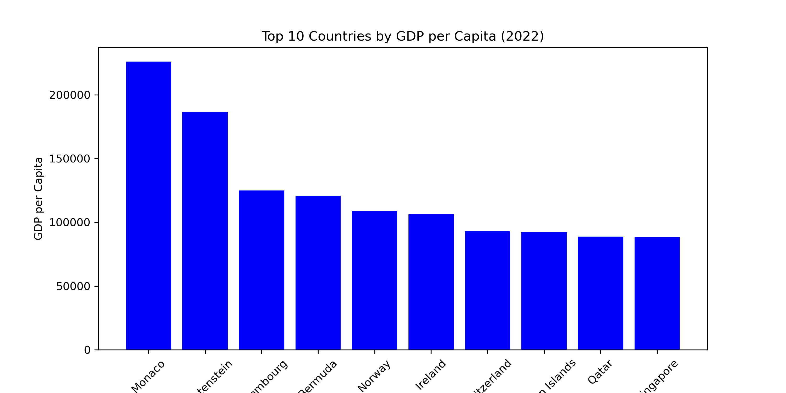
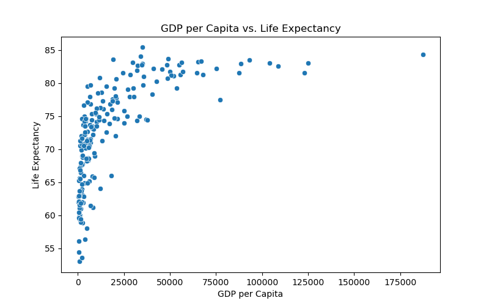

# Select key indicatorsdf_selected = df[['country', 'gdp_per_capita', 'life_expectancy', 'unemployment_rate']]# Display first few rowsdf_selected.head()
country
gdp_per_capita
life_expectancy
unemployment_rate
0
Afghanistan
357.261153
62.879
14.100
1
Albania
6846.426143
76.833
10.137
2
Algeria
4961.552577
77.129
12.346
3
American Samoa
18017.458938
NaN
NaN
4
Andorra
42414.059009
NaN
NaN
Exploratory Data Analysis
To better understand the dataset, I conducted an exploratory data analysis (EDA) focusing on three key indicators:
GDP per Capita (Economic Indicator)
Life Expectancy (Health Indicator)
Unemployment Rate (Labor Market Indicator)
1. Missing Values Overview
Missing values can significantly impact our analysis. I checked for missing values in the dataset using .isnull().sum(), and the results indicate the following:
Life Expectancy has missing values for several countries, which may be due to a lack of reliable health data collection.
Unemployment Rate is missing for some nations, likely due to inconsistent labor force surveys.
Other variables, such as education expenditure and health expenditure, also contain missing values, which may need to be handled via imputation or removal.
STEP 4
import matplotlib.pyplot as plt# Bar Chart - Top 10 Countries by GDP per Capitatop_countries = df.nlargest(10, 'gdp_per_capita')plt.figure(figsize=(10,5))plt.bar(top_countries['country'], top_countries['gdp_per_capita'], color='blue')plt.xlabel("Country")plt.ylabel("GDP per Capita")plt.title("Top 10 Countries by GDP per Capita (2022)")plt.xticks(rotation=45)# Save the figure before showing itplt.savefig("top_10_gdp.png", dpi=300)plt.show()
 Top 10 richest countries based on GDP per capita. Data Source: World Bank (2022).
import seaborn as sns# Scatter Plot - GDP Per Capita vs. Life Expectancyplt.figure(figsize=(8,5))sns.scatterplot(x=df['gdp_per_capita'], y=df['life_expectancy'])plt.xlabel("GDP per Capita")plt.ylabel("Life Expectancy")plt.title("GDP per Capita vs. Life Expectancy")plt.show()
 GDP per Capita vs. Life Expectancy for different countries. Data Source: World Bank (2022).
STEP 5
# Compute summary statistics for selected indicatorssummary_table = df_selected.describe()# Display as a markdown tablesummary_table
gdp_per_capita
life_expectancy
unemployment_rate
count
207.000000
209.000000
186.000000
mean
20520.336828
72.416519
7.227344
std
30640.741594
7.713322
5.844462
min
250.634225
52.997000
0.130000
25%
2599.752468
66.782000
3.478000
50%
7606.237525
73.514634
5.334000
75%
27542.145523
78.475000
9.261750
max
226052.001905
85.377000
35.359000
STEP 6
# Scatter Plot – GDP Per Capita vs. Life Expectancyplt.figure(figsize=(8,5))sns.scatterplot(x=df['gdp_per_capita'], y=df['life_expectancy'])plt.xlabel("GDP per Capita")plt.ylabel("Life Expectancy")plt.title("GDP per Capita vs. Life Expectancy")plt.show()
Figure 1
# Bar Chart - Top 10 Countries by GDP per Capitatop_countries = df.nlargest(10, 'gdp_per_capita')plt.figure(figsize=(10,5))plt.bar(top_countries['country'], top_countries['gdp_per_capita'], color='blue')plt.xlabel("Country")plt.ylabel("GDP per Capita")plt.title("Top 10 Countries by GDP per Capita (2022)")plt.xticks(rotation=45)plt.show()
Figure 2
# Compute summary statistics for selected indicatorssummary_table = df_selected.describe()# Display as a markdown tablesummary_table
gdp_per_capita
life_expectancy
unemployment_rate
count
207.000000
209.000000
186.000000
mean
20520.336828
72.416519
7.227344
std
30640.741594
7.713322
5.844462
min
250.634225
52.997000
0.130000
25%
2599.752468
66.782000
3.478000
50%
7606.237525
73.514634
5.334000
75%
27542.145523
78.475000
9.261750
max
226052.001905
85.377000
35.359000
Table 1
Table: Summary Statistics of Key Indicators
The table below presents summary statistics for GDP per capita, life expectancy, and unemployment rate.
Analysis of Visualizations and Summary Statistics
As shown in Figure 1, there is a clear positive relationship between GDP per capita and life expectancy. Countries with higher GDP per capita tend to have longer life expectancies, suggesting that economic prosperity contributes to better healthcare and living conditions.
The economic disparity among countries is evident in Figure 2, where the top 10 richest nations have significantly higher GDP per capita compared to the global average. This highlights the economic inequality between developed and developing nations.
As presented in Table 1, GDP per capita has a wide range, from as low as $259 to over $240,000. This large disparity indicates income inequality worldwide. Additionally, the summary statistics show that some countries have extremely high unemployment rates, further reinforcing the economic challenges faced by certain nations.
STEP 7
The data used in this report is sourced from the World Bank dataset (Bank 2022).